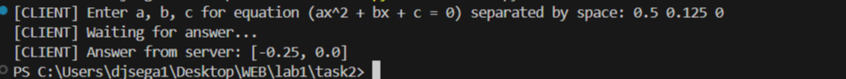
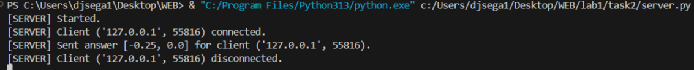

Задание 2 (Решение квадратного уравнения TCP)
Сервер:
def quadratic_solver(a, b, c):
"""
Solves quadratic equation (ax^2 + bx + c = 0).
"""
result = set()
d = b**2 - 4*a*c
if d >= 0:
x1 = round((-b + d**0.5) / (2*a), 2)
x2 = round((-b - d**0.5) / (2*a), 2)
result.add(x1)
result.add(x2)
return sorted(list(result))
def quadratic_solver_server():
sock = socket.socket(socket.AF_INET, socket.SOCK_STREAM)
sock.bind((SERVER_ADDRESS, SERVER_PORT))
sock.listen(MAX_CONN)
print("[SERVER] Started.")
while True:
conn, address = sock.accept()
conn.settimeout(10)
print(f"[SERVER] Client {address} connected.")
try:
data = conn.recv(BUF_SIZE)
if data:
a, b, c = map(float, data.decode().split())
reply = str(quadratic_solver(a, b, c))
conn.sendall(reply.encode())
print(f"[SERVER] Sent answer {reply} for client {address}.")
except Exception as e:
reply = 'Wrong a, b, c or timeout.'
conn.sendall(reply.encode())
print(f"[SERVER] Exception: {e}.")
finally:
conn.close()
print(f"[SERVER] Client {address} disconnected.")
Запуск:
cd task2
python server.py
Клиент:
def quadratic_solver_client():
sock = socket.socket(socket.AF_INET, socket.SOCK_STREAM)
try:
print("[CLIENT] Enter a, b, c for equation (ax^2 + bx + c = 0) separated by space: ", end="")
message = input()
sock.connect((SERVER_ADDRESS, SERVER_PORT))
sock.sendall(message.encode())
print("[CLIENT] Waiting for answer...")
data = sock.recv(BUF_SIZE)
print(f"[CLIENT] Answer from server: {data.decode()}")
except Exception as e:
print(f"[CLIENT] Error: {e}")
finally:
sock.close()
Запуск:
cd task2
python client.py
Пример работы:

